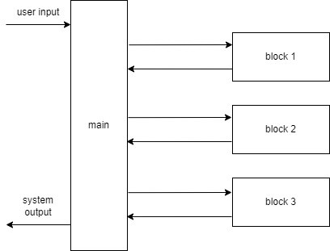

2. DialBBの概要
はじめにに書いたように，DialBBは対話システムを作るためのフレームワークです．
フレームワークとは，それ単体でアプリケーションとして成立はしないが，データや追加のプログラムを与えることでアプリケーションを作成するものです．
以下にDialBBのアプリケーションの基本的なアーキテクチャを示します．

メインモジュールは，対話の各ターンで入力されたデータ（ユーザ発話を含みます）を各ブロックに順次処理させることにより，システム発話を作成して返します．この入力の内容は同じJSON形式のデータblackboard[1] に書き込まれます．各ブロックは，blackboardの要素のいくつかを受け取り，辞書形式のデータを返します．返されたデータはblackboardに追加されます．すでに同じキーを持つ要素がblackboardにある場合は上書きされます．
どのようなブロックを使うかは，コンフィギュレーションファイルで設定します．ブロックは，あらかじめDialBBが用意しているブロック（組み込みブロック）でもアプリケーション開発者が作成するブロックでも構いません．
メインモジュールが各ブロックにどのようなデータを渡し，どのようなデータを受け取るかもコンフィギュレーションファイルで指定します．
詳細は「フレームワーク仕様」で説明します．